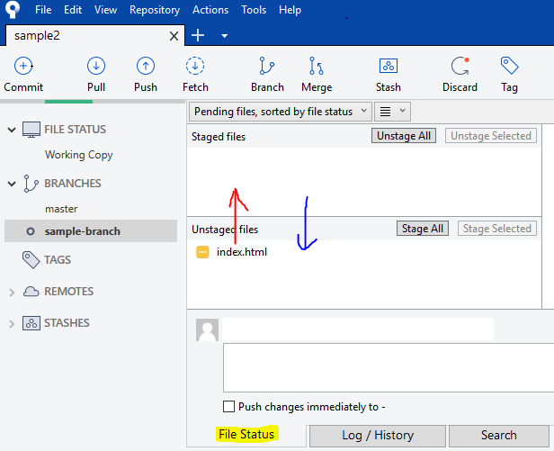
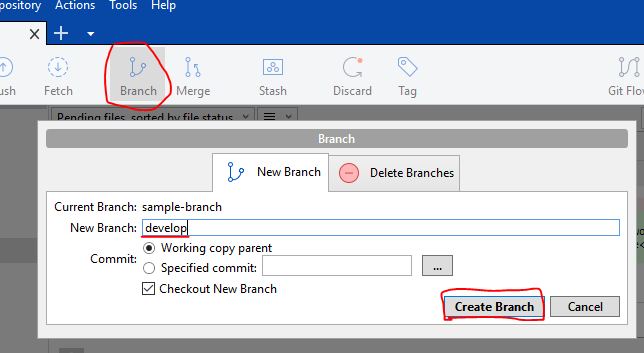
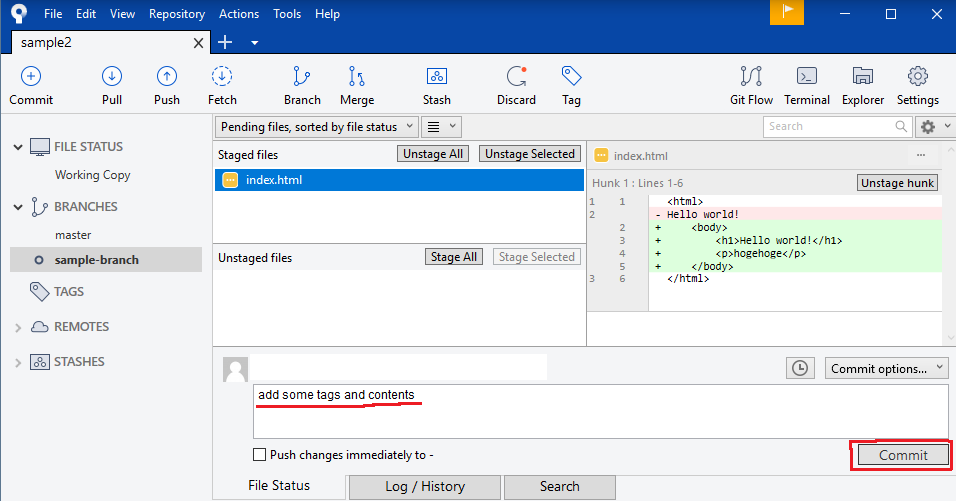
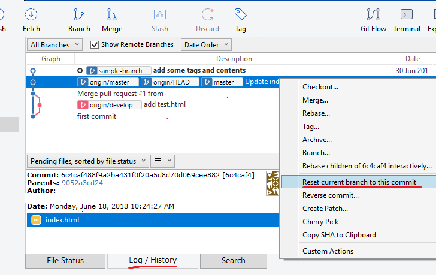
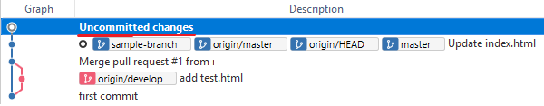
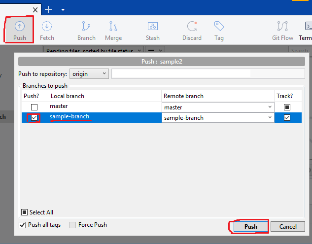

I would like to introduce how to push local repository. When you implemented some functions, you push them to remote repository. (We push on Wednesday.)
- Checkout the develop branch If you are in the master branch, checkout the develop branch. If you have not created the develop branch yet, create it and checkout.
- Add the files Add the files which you want to push to prepare the content staged for the next commit. After you added, if you want to cancel the staged files, you can cancel. These operation is easy. Just drag-and-drop. 
- Commit your changes Commit save your changes to the local repository. you save the staged files by add operation.
- Push the develop branch After commit, you push it.
How to create branch
You commit with message about your change. 
How to cancel the commit
If you want to cancel the commit you can do it. First, click the "Log / History". Then hover the cursor on the before your commit and right click. Finally, choose the "Restet current branch to this commit". After reset
Check your develop branch and push. 